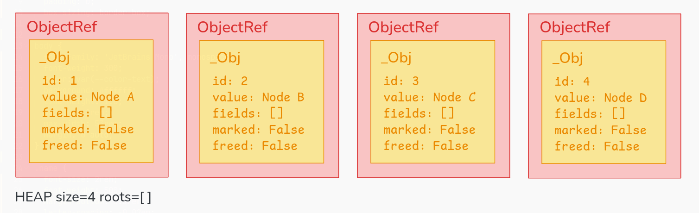
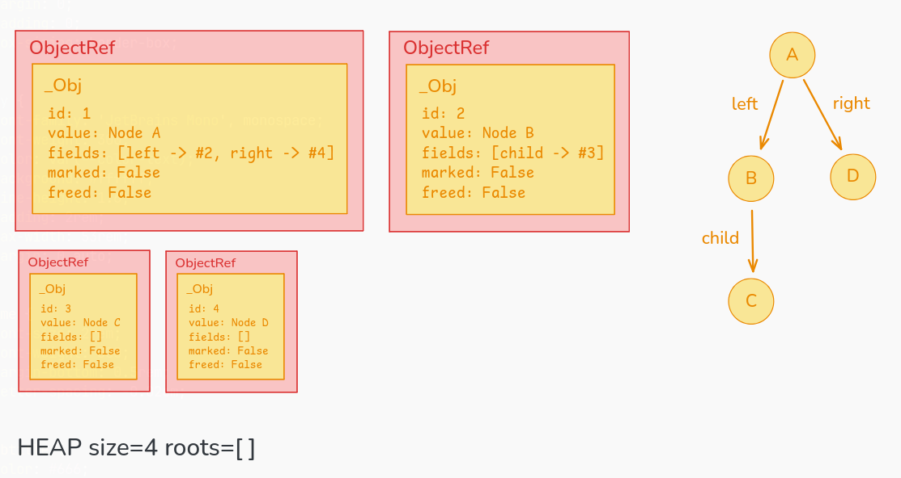
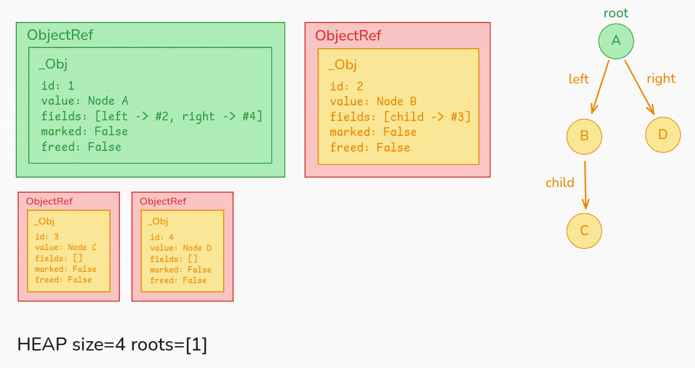
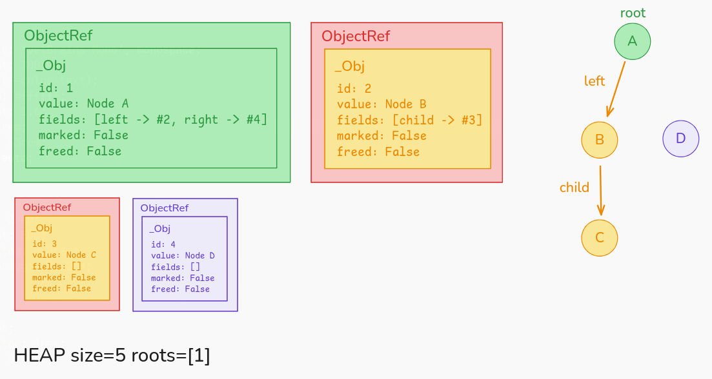
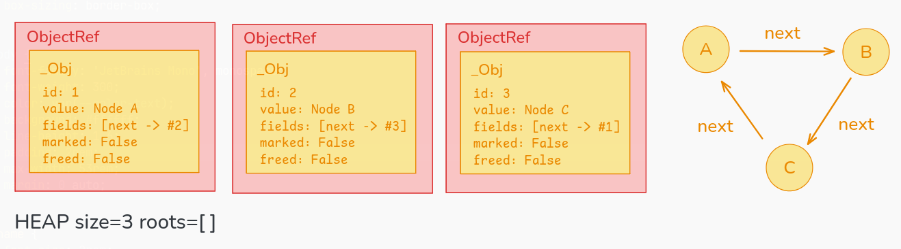
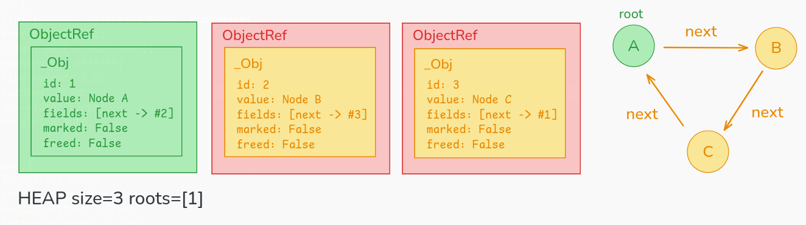
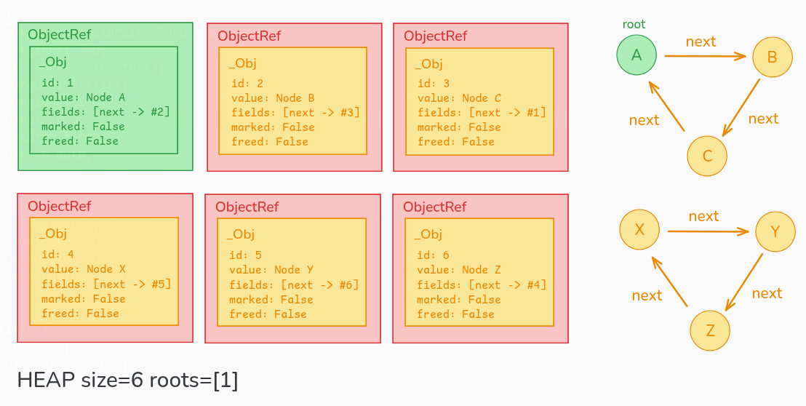

This garbage collector automates memory management by marking all objects reachable from roots (like global variables), then sweeping away everything that was not marked (unreachable = garbage).
_Obj - This is like a node in a graph. It has an id (unique identifier), value (the actual data stored), fields (references to OTHER objects, like links in a graph), marked (used during GC to track 'I have been visited'), and freed (tracks if this object has been deleted).
ObjectRef - A wrapper that lets us safely reference objects. Nothing serious.
MarkSweepGC - This is the main class for memory management. It has a heap where all objects live (dictionary: id -> object), and roots which are objects that must NOT be garbage collected.

gc = MarkSweepGC()
obj_a = gc.alloc("Node A")
obj_b = gc.alloc("Node B")
obj_c = gc.alloc("Node C")
obj_d = gc.alloc("Node D")
print(gc.heap_snapshot())HEAP size=4, ROOTS=[]
_Obj #1 (val='Node A', marked=False, freed=False, fields=[])
_Obj #2 (val='Node B', marked=False, freed=False, fields=[])
_Obj #3 (val='Node C', marked=False, freed=False, fields=[])
_Obj #4 (val='Node D', marked=False, freed=False, fields=[])4 objects have been allocated, and each has got a unique ID (1,2,3,4). No roots yet, that means everything is eligible for garbage collection. NO fields yet too, so objects are all isolated.

gc.set_field(obj_a, "left", obj_b)
gc.set_field(obj_a, "right", obj_d)
gc.set_field(obj_b, "child", obj_c)
print(gc.heap_snapshot())HEAP size=4, ROOTS=[]
_Obj #1 (val='Node A', marked=False, freed=False, fields=[left -> #2, right -> #4])
_Obj #2 (val='Node B', marked=False, freed=False, fields=[child -> #3])
_Obj #3 (val='Node C', marked=False, freed=False, fields=[])
_Obj #4 (val='Node D', marked=False, freed=False, fields=[])Still no roots, if we run GC now, EVERYTHING gets deleted.

gc.add_root(obj_a)
print(gc.heap_snapshot())HEAP size=4, ROOTS=[1]
... rest remain same ...Now object #1 (A) is a root. It's like saying "this is a global variable, don't delete it".
gc.gc()
print(gc.heap_snapshot())HEAP size=4, ROOTS=[1]
_Obj #1 (val='Node A', marked=False, freed=False, fields=[left -> #2, right -> #4])
_Obj #2 (val='Node B', marked=False, freed=False, fields=[child -> #3])
_Obj #3 (val='Node C', marked=False, freed=False, fields=[])
_Obj #4 (val='Node D', marked=False, freed=False, fields=[])Things remain same. What happened when we called gc()?
MARK PHASE: We start at root A (id=1), mark it. A has fields: left -> B(2) and right -> D(4). Visit B, mark it. B has child -> C(3). We visit C, mark it. C has no children. Visit D, mark it. D has no children.
SWEEP PHASE: Check Object 1: marked? YES -> keep, reset mark. Check Object 2: marked? YES -> keep, reset mark. Check Object 3: marked? YES -> keep, reset mark. Check Object 4: marked? YES -> keep, reset mark.
Everything reachable from root A(1) was kept.

We create an orphan that's NOT connected to any root. We remove the connection A -> D:
gc.set_field(obj_a, "right", None)
print(gc.heap_snapshot())_Obj #1 (val='Node A', marked=False, freed=False, fields=[left -> #2])
_Obj #2 (val='Node B', marked=False, freed=False, fields=[child -> #3])
_Obj #3 (val='Node C', marked=False, freed=False, fields=[])
_Obj #4 (val='Node D', marked=False, freed=False, fields=[])Now we do garbage collection again:
gc.gc()
print(gc.heap_snapshot())HEAP size=3, ROOTS=[1]
_Obj #1 (val='Node A', marked=False, freed=False, fields=[left -> #2])
_Obj #2 (val='Node B', marked=False, freed=False, fields=[child -> #3])
_Obj #3 (val='Node C', marked=False, freed=False, fields=[])D is gone, just like ...


One of the key strengths of using mark-and-sweep over reference counting is that it can handle cyclic relations. Say, for A -> B -> C -> A (cycle): each object has a reference count > 0, so none get deleted even if unreachable from roots.
Let's build a cycle:
node_a = gc.alloc("A")
node_b = gc.alloc("B")
node_c = gc.alloc("C")
gc.add_root(node_a)
gc.set_field(node_a, "next", node_b)
gc.set_field(node_b, "next", node_c)
gc.set_field(node_c, "next", node_a)
print(gc.heap_snapshot())This cycle constitutes of the root (A(1)):
HEAP size=3, ROOTS=[1]
_Obj #1 (val='A', marked=False, freed=False, fields=[next -> #2])
_Obj #2 (val='B', marked=False, freed=False, fields=[next -> #3])
_Obj #3 (val='C', marked=False, freed=False, fields=[next -> #1])Hence it is a reachable cycle, and if we run GC, all of them survive. We can trace through _mark(): starting at root A(1), is A marked? no. Mark A. A has field: next -> B(2), recursively call _mark(B). At B(2), is B marked? no. Mark B. B has field: next -> C(3), recursively call _mark(C). Same procedure. Back at A(1): is A marked? YES (BAM!), return immediately (to avoid infinite loop).

Let's make an unreachable cycle, which will be collected:
orphan_x = gc.alloc("X")
orphan_y = gc.alloc("Y")
orphan_z = gc.alloc("Z")
gc.set_field(orphan_x, "next", orphan_y)
gc.set_field(orphan_y, "next", orphan_z)
gc.set_field(orphan_z, "next", orphan_x)
print(gc.heap_snapshot())HEAP size=6, ROOTS=[1]
_Obj #1 (val='A', marked=False, freed=False, fields=[next -> #2])
_Obj #2 (val='B', marked=False, freed=False, fields=[next -> #3])
_Obj #3 (val='C', marked=False, freed=False, fields=[next -> #1])
_Obj #4 (val='X', marked=False, freed=False, fields=[next -> #5])
_Obj #5 (val='Y', marked=False, freed=False, fields=[next -> #6])
_Obj #6 (val='Z', marked=False, freed=False, fields=[next -> #4])Well, now if we run GC:
gc.gc()
print(gc.heap_snapshot())The unreachable cycle gets removed:
HEAP size=3, ROOTS=[1]
_Obj #1 (val='A', marked=False, freed=False, fields=[next -> #2])
_Obj #2 (val='B', marked=False, freed=False, fields=[next -> #3])
_Obj #3 (val='C', marked=False, freed=False, fields=[next -> #1])MARK PHASE: We start at root A (id=1), mark it. A has fields: left -> B(2) and right -> C(3) (stops when hitting already-marked A(1)). X(4), Y(5), Z(6) are NEVER visited.
SWEEP PHASE: A, B, C all are marked, so keep. X, Y, Z none of them are marked, so all three of them get deleted.
That's it.